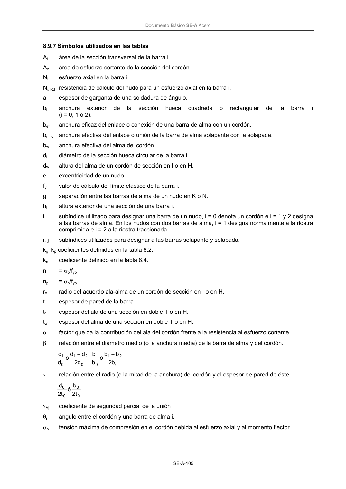

DB-SE-A Acero · edición 2007-10-23 · capa oficial
Documento DB-SE-A-oficial · SHA-256 del PDF 9ed9ea694aabfbda3bfbbef40dfe9223fde05d13c35bc2ba9751e5a96a22a64f
Página física 107 de 168.
Copia fiel del PDF fuente · Fuente oficial
Ficha de la disposición en la fuente oficial
Formato: Texto de la página (Markdown)
Documento Básico SE-A Acero SE-A-105 8.9.7 Símbolos utilizados en las tablas Ai área de la sección transversal de la barra i. Av área de esfuerzo cortante de la sección del cordón. Ni esfuerzo axial en la barra i. Ni, Rd resistencia de cálculo del nudo para un esfuerzo axial en la barra i. a espesor de garganta de una soldadura de ángulo. bi anchura exterior de la sección hueca cuadrada o rectangular de la barra i (i = 0, 1 ó 2). bef anchura eficaz del enlace o conexión de una barra de alma con un cordón. be.ov anchura efectiva del enlace o unión de la barra de alma solapante con la solapada. bw anchura efectiva del alma del cordón. di diámetro de la sección hueca circular de la barra i. dw altura del alma de un cordón de sección en I o en H. e excentricidad de un nudo. fyi valor de cálculo del límite elástico de la barra i. g separación entre las barras de alma de un nudo en K o N. hi altura exterior de una sección de una barra i. i subíndice utilizado para designar una barra de un nudo, i = 0 denota un cordón e i = 1 y 2 designa a las barras de alma. En los nudos con dos barras de alma, i = 1 designa normalmente a la riostra comprimida e i = 2 a la riostra traccionada. i, j subíndices utilizados para designar a las barras solapante y solapada. kg, kp coeficientes definidos en la tabla 8.2. kn coeficiente definido en la tabla 8.4. n = σo/fyo np = σp/fyo ro radio del acuerdo ala-alma de un cordón de sección en I o en H. ti espesor de pared de la barra i. tf espesor del ala de una sección en doble T o en H. tw espesor del alma de una sección en doble T o en H. α factor que da la contribución del ala del cordón frente a la resistencia al esfuerzo cortante. β relación entre el diámetro medio (o la anchura media) de la barra de alma y del cordón. 0 2 1 0 1 0 2 1 0 1 b 2 b b ó b b , d 2 d d ó d d + + γ relación entre el radio (o la mitad de la anchura) del cordón y el espesor de pared de éste. 0 0 0 0 t 2 b ó t 2 d γMj coeficiente de seguridad parcial de la unión θi ángulo entre el cordón y una barra de alma i. σo tensión máxima de compresión en el cordón debida al esfuerzo axial y al momento flector.
